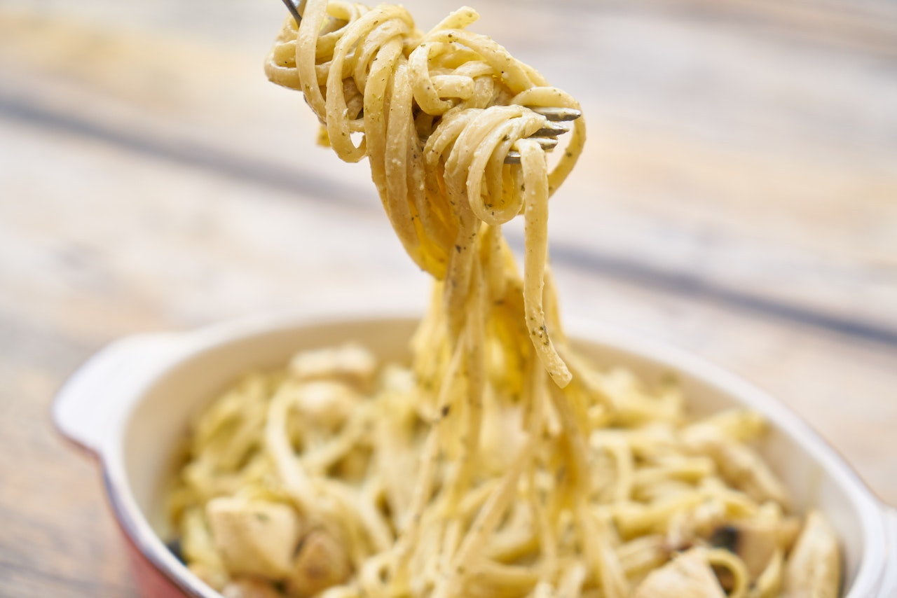

Classic Carbonara

Description
One of the most Classic Italian Pasta dishes, La Carbonara, Pancetta and Egg Pasta. A creamy delicious dinner recipe without the cream. Ready in 15 minutes or less
Ingredients
- 2 tbsp. olive oil
- 3-4 tbsp. fresh grated parmesan cheese (plus extra for sprinkling)
- 3 large eggs (room temp.)
- 2/3 cups cubed pancetta
- 3 cups cooked pasta
- hot pepper flakes to taste if desired
Steps
- In a large frying pan add the oil , pancetta and hot pepper flakes (if using) cook on medium heat until the pancetta is cooked (but not too crispy). Stirring often so the pancetta doesn't burn.
- While pancetta is cooking , boil a large pot of water, when the water has boiled add some salt and the pasta and cook until al dente*. (If the pancetta is done before the pasta is cooked then turn off the heat, you will reheat later).
- While pasta is cooking, in a small bowl beat the 3 eggs, then add the parmesan and mix very well. When the pasta is cooked turn the heat back on the pancetta (to medium high), add the drained pasta toss together to combine well for about 20-30 seconds, then remove the pan from the heat add the egg mixture, constantly tossing together add a tablespoon or two of pasta water to make sure it is very creamy and continue to toss until well blended. Top with parmesan cheese if desired. Serve immediately. Enjoy!
Homepage